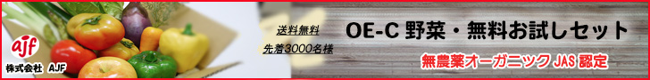
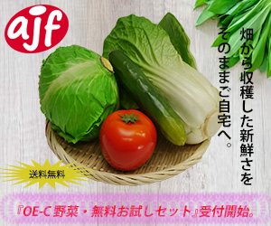

株式会社ajfの野菜は国内各地の自社農場で生産され、畑から収穫した新鮮なまま ご自宅へお届けしています。 無農薬・オーガニックJAS認定で非遺伝子組み換えのもと育てられた野菜なので、のもと 味や栄養素が非常に高くみずみずしい状態で届くので，野菜嫌いの方でも美味しくお召し上がりいただけると思います。 従来の同等農法に比べて生産効率性が4割から6割高いので、安価で提供できるようになりました。 只今、先着3,000名様に「無料お試しセットセット」をご用意しております。 同キャンペーンから約半月で終了予定となっておりますので、お早めにお試しください。

バナー広告１作目
アピールポイント
株式会社ajfの野菜は国内各地の自社農場で生産され、畑から収穫した新鮮なまま ご自宅へお届けしています。 無農薬・オーガニックJAS認定で非遺伝子組み換えのもと育てられた野菜なので、のもと 味や栄養素が非常に高くみずみずしい状態で届くので，野菜嫌いの方でも美味しくお召し上がりいただけると思います。 従来の同等農法に比べて生産効率性が4割から6割高いので、安価で提供できるようになりました。 只今、先着3,000名様に「無料お試しセットセット」をご用意しております。 同キャンペーンから約半月で終了予定となっておりますので、お早めにお試しください。
ユーザーターゲット
株式会社ajfの野菜は国内各地の自社農場で生産され、畑から収穫した新鮮なまま ご自宅へお届けしています。 無農薬・オーガニックJAS認定で非遺伝子組み換えのもと育てられた野菜なので、のもと 味や栄養素が非常に高くみずみずしい状態で届くので，野菜嫌いの方でも美味しくお召し上がりいただけると思います。 従来の同等農法に比べて生産効率性が4割から6割高いので、安価で提供できるようになりました。 只今、先着3,000名様に「無料お試しセットセット」をご用意しております。 同キャンペーンから約半月で終了予定となっておりますので、お早めにお試しください。